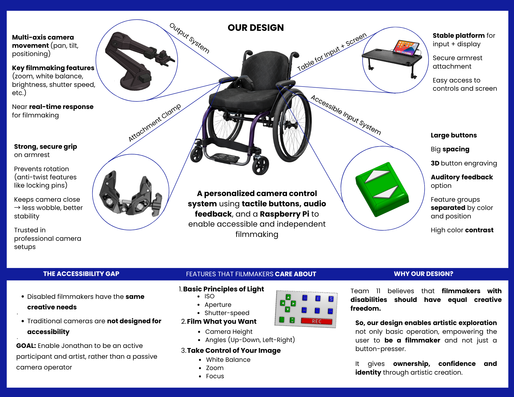
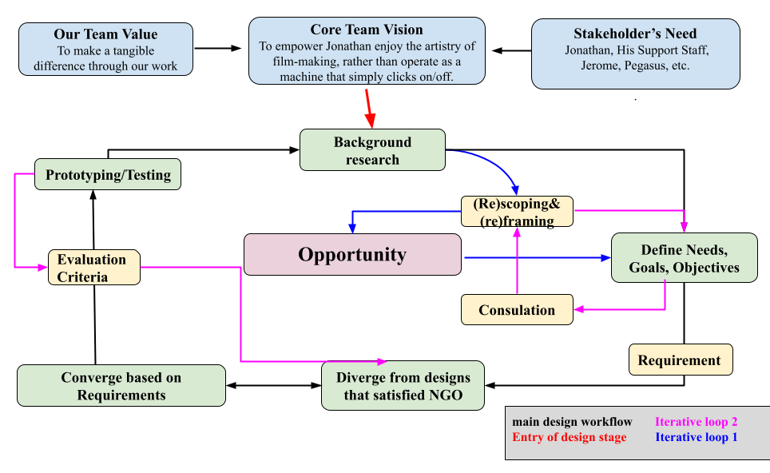
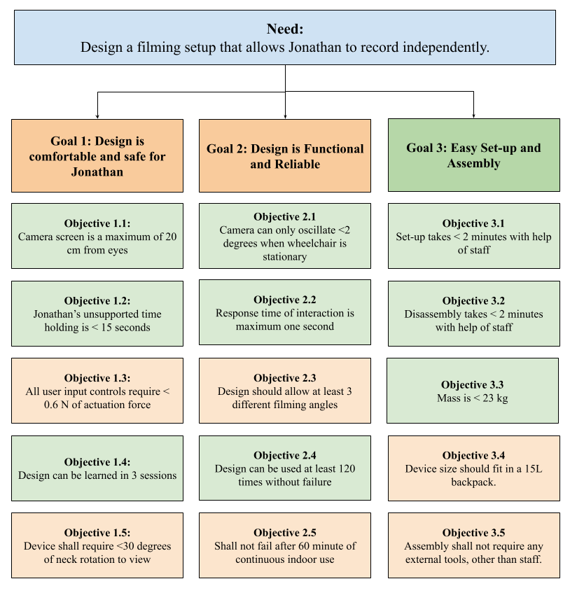
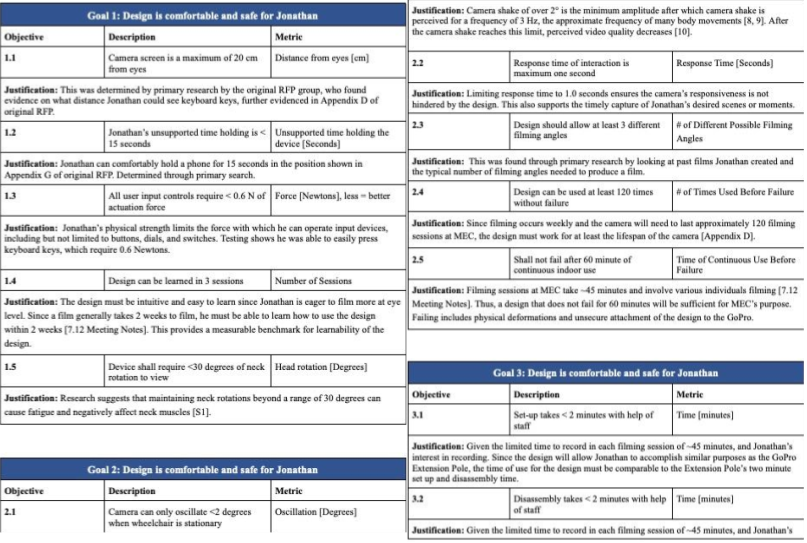
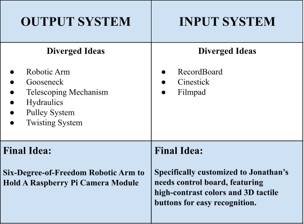
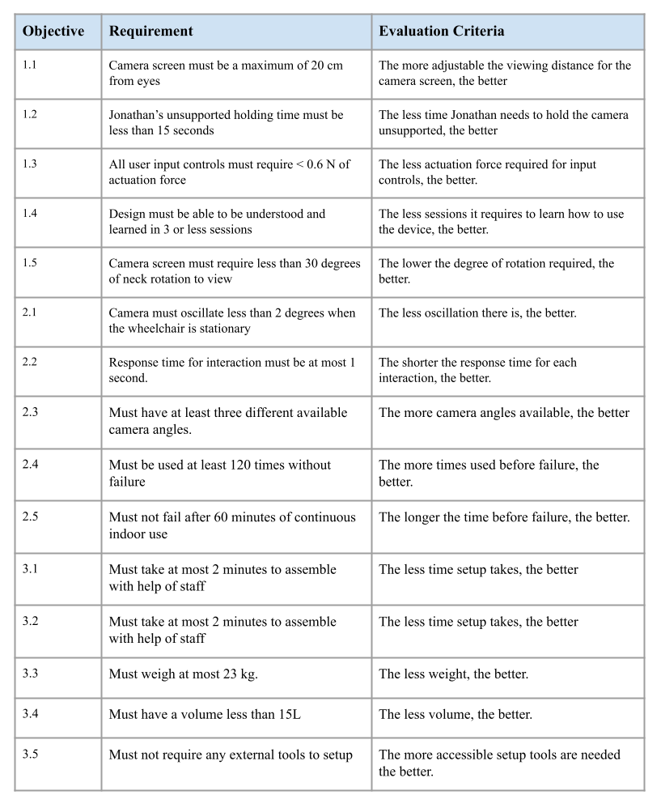

Overview
This is an user-centered assistive design project focused on expanding access to filmmaking for an individual with mobility and visual impairments.
Through stakeholder meetings, research, and iterative concept development, we defined the design opportunity around two connected challenges: creating an accessible input system that the user could operate reliably, and developing an output system that could position and control a camera in a way that supports creativity.
The final concept combined a tactile input board, audio feedback, a Raspberry Pi camera system, and a mounted robotic arm to support accessible camera control. As shown in the one-pager below, the design brought together an accessible input system, a stable wheelchair-mounted platform, and flexible camera movement to create a more independent filmmaking experience.

Design Process & Key Design Decisions
This project followed an iterative design process grounded in stakeholder input, background research, and prototyping. The goal was to identify a system that would let Jonathan participate in filmmaking with greater independence, not just operate a camera at a basic level.
The process diagram below shows how the project moved between problem framing, consultation, requirement setting, concept generation, convergence, and testing.

A key early decision was to define the problem as more than a mounting challenge. The team concluded that helping Jonathan hold a camera would not be enough if he still could not control recording or important filming functions. Based on this, the design problem was split into two subspaces: an input system and an output system.
The input subspace was driven mainly by Jonathan’s motor and visual accessibility needs. Different design concepts were compared, including the recordboard, cinestick, and filmpad. The custom control board was selected because it gave the best overall performance in tactile recognition, error reduction, ease of use without vision, and cognitive simplicity. Large spacing, raised button features, high-contrast colors, and mechanical button input made it more reliable than joystick-based or touch-based alternatives.
The output subspace was driven mainly by filmmaking function. Several mechanisms were considered, including a robotic arm, gooseneck, telescoping mechanism, hydraulics, pulley system, and twisting system. Some were eliminated because they were too complex to build reliably within the project timeline. Others were eliminated because they did not provide enough useful movement or did not match Jonathan’s needs well. The robotic arm was selected because it provided the best combination of camera positioning capability, compatibility with electronic control, and integration with a Raspberry Pi camera system.
Several supporting design decisions followed from this structure. A Raspberry Pi camera module was chosen to allow programmable control over filming features such as zoom, focus, and exposure-related settings. A live feed to an iPad or monitor was included so Jonathan could check framing in real time. Local video storage was chosen to avoid dependence on wireless stability during filming. For physical integration, the team selected a clamp-based attachment for the camera system and a wheelchair-mounted tray for the control interface in order to improve stability, reach, and usability.
Across these decisions, the main selection criteria were consistent: accessibility, functional usefulness, reliability, and feasibility within the project constraints.
CTMF
1. NGO
Needs–Goals–Objectives (NGO) was one of the model we used in this project. NGO helped structure the problem by separating it into three levels:
- needs: defines the core problem or opportunity
- goals: describe what the system should do in response
- objectives: translate those goals into more specific targets that can guide later requirements and evaluation.
In this project, NGO was useful because the design challenge was broad at the start. The team was not simply asked to build a camera mount, but to support Jonathan’s ability to record independently and participate more fully in filmmaking. NGO helped us turn that broad need into a more structured engineering problem by identifying three main goals: making the design comfortable and safe for Jonathan, ensuring the system was functional and reliable, and making setup and assembly manageable in practice. These goals were then broken into measurable objectives such as screen distance, unsupported holding time, actuation force, response time, oscillation, setup time, mass, and durability.
The diagram below shows the one of the NGO structure we used to connect the stakeholder need to specific design objectives.

Using NGO helped the project by giving our team a clear basis for later design decisions and evaluation. With NGOs, we could refer to objectives when comparing concepts and building the prototype. One strength of NGO is that it converts stakeholder needs into engineering targets that can be designed and tested against. One weakness is that the quality of the NGO depends on how well the team understands the user and context early on. If the initial framing is incomplete, the objectives may also be incomplete (In this project, repeated consultation helped reduce that risk). In future projects, I would use NGO again when a design problem begins with an important human need but is still too broad to guide engineering work directly.
2. Critique
Critique is a reasoned and systematic feedback used to evaluate a design, challenge assumptions, and identify where the argument, scope, or execution needs improvement.
In this project, critique played an important role in our design iterations. After beta release, which our team did not do well. We had a detailed discussion with the TA and received substantial feedback on the project, which prevented us from continuing with a weak direction That critique made us step back and re-examine our team vision, which led us to reframe the problem, rescope the design space, and go through another round of convergence and divergence.
After reflecting on the mistakes we made, instead of only making surface-level fixes, the critique pushed us to revisit the structure of the project itself and improve the alignment between stakeholder needs, design decisions, and the final concept.
One strength of critique is that it can reveal deeper problems that the team may no longer notice on its own. One limitation is that critique is only useful if the team is willing to respond to it seriously rather than treat it as minor commentary. In future projects, I would treat critique earlier and more deliberately as a design input, not just as feedback after a weak deliverable.
Below is the revised NGO we made after beta release consulation:

3. Functional Structure Diagrams
Functional Structure Diagrams are a tool in the design process. They are used to break a complex system into smaller functional parts, making the problem easier to analyze and solve.
This tool helped us break a large system into smaller functional parts so different parts of the project could be developed in parallel. In our case, separating the design into input and output subspaces made it easier to assign tasks, generate concepts, and evaluate decisions within each area.
The diagram below shows how this tool helped us generate concepts separately for each design subspace.

One strength of Functional Structure Diagrams is that they make large systems more manageable by dividing them into smaller engineering problems. One limitation is that this only works well when communication between the people working on different parts is strong. If different parts are developed without a clear shared understanding of what each other is doing, misalignment can appear when we try to put the chunks together. This happened in our group, and it required quite a lot of effort to get back on track. In future projects, I would use this tool again for complex systems, but I would put more effort into defining interfaces and maintaining communication between the different parts of the design process.
4. Evaluation Criteria
Evaluation criteria are representing and testing tools in the design process. They are the standards or benchmarks used to assess how well a design performs.
Below is a diagram of requirement of evaluation criteria we used during one of the many design iterations

In this project, our team used evaluation criteria to define how the input system, output system, and integrated system would be judged. These criteria included tactile recognition accuracy, response time, camera oscillation, setup time, portability, unsupported holding time, and degrees of freedom. They were used to compare concepts and to evaluate prototype performance during testing.
This contributed to the project by giving the design process a clearer engineering basis. Instead of relying only on intuition, we could assess concepts and prototypes against defined measures of performance.
One strength of this tool is that they make design decisions more measurable and easier to justify. One limitation is that they are only useful if the chosen criteria reflect actual use conditions. In future projects, I would use evaluation criteria again, but I would tie them even more directly to final user testing.